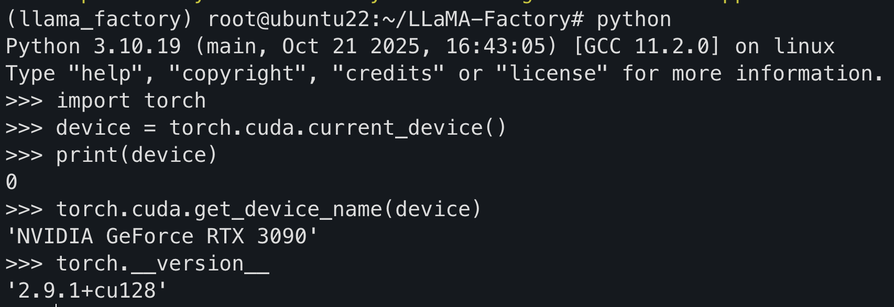
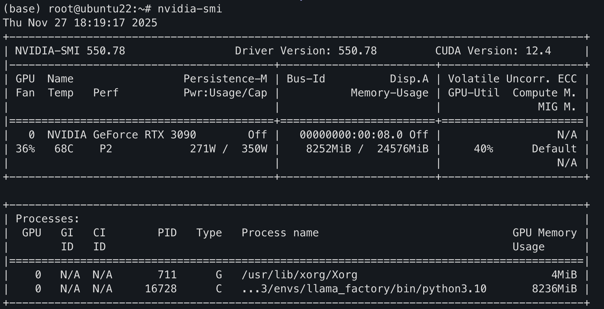
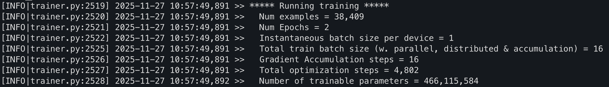

QLoRA微調Qwen-2.5-7B-Instruct
QLoRA微調Qwen-2.5-7B-Instruct
1. 準備工作
- 在智星雲上租賃顯卡，本項目采用的是RTX 3090（單GPU，24G RAM）的配置，CPU不作要求（>＝8核＋16G即可），太低會導致對數據的处理導入等操作太慢
- 鏡像采用Ubantu22.04
- 準備數據集，本項目采用huggingface的alpaca_gpt4_zh數據集
2. 初始化環境配置
- ssh登入服務器
- 使用
git clone https://github.com/hiyouga/LLaMA-Factory.git命令clone llama-factory倉庫到本地 conda create -n llama_factory python=3.10創建一个conda環境- 進入conda環境并執行
pip install -e '.[torch,metrics]'安裝所有需要的庫 - 檢查環境配置是否成功
1 | import torch |

使用llamafactory-cli train -h來檢查llama-factory基礎庫安裝是否正確，有大量輸出指導即為成功
3. 模型與數據集準備
3.1 模型準備
方法一
由於模型普遍較大，無法直接使用git clone來獲取，需先下載Git LFS再clone。
1 | sudo apt-get update |
隨後在LLaMA-Factory目錄中創建一个名為model的目錄用於存放模型，再在該目錄中執行git clone https://huggingface.co/Qwen/Qwen2.5-7B-Instruct即可
Att：模型會放到model目錄中，日後模型的路徑要使用絕對路徑-model_name_or_path model/Qwen2.5-7B-Instruct
方法二（推薦）
在git clone不成功的情況下，可在服務器使用huggingface_cli來下模型
首先下載huggingface-_cli和hf_transfer
1 | pip install huggingface-hub==0.35.0 |
進入model目錄執行hf download Qwen/Qwen2.5-7B-Instruct --local-dir Qwen2.5-7B-Instruct
方法三
在本地下載并上傳到服務器
1 | pip install huggingface-hub hf_transfer |
執行tar -czvf qwen2.5-7b-instruct.tar.gz Qwen2.5-7B-Instruct/壓縮文件
隨後執行scp -P 21824 qwen2.5-7b-instruct.tar.gz root@js1.blockelite.cn:/root/LLaMA-Factory/model/上傳至服務器的model目錄中
建議使用huggingface直接在服務器上下，本地下再上傳會很慢，壓縮和解縮很慢，因為模型的參數大多都是不同的浮點數，沒有重复的所以壓縮完文件也很大
3.2 模型測試
（方法一）
在LLaMA-Factory目錄中創建一个test_qwen.sh，內容如下
1 |
|
注意\後不可有空格
在執行bash前要在conda環境下執行pip install bitsandbytes>=0.39.0
使用chmod +x test_qwen.sh賦予執行權限，并執行bash test_qwen.sh
（方法二）
創建infer.yaml文件，內容如下：
1 | model_name_or_path: /root/LLaMA-Factory/model/Qwen2.5-7B-Instruct |
執行llamafactory-cli chat infer.yaml即可
建議統一使用yaml來執行訓練、評估、測試。因為.sh腳本常常會報錯。
3.3 數據集準備
直接在訓練腳本中指定dataset即可，huggingface會自動下載，若要自定義數據集那就得手動上傳到服務器并在dataset中指定其路徑
4. 模型訓練
4.1 tmux中启動模型訓練
使用tmux new -s qwen_train開启一个tmux會話并在此進行訓練，使用Ctrl ＋ B 後點D可退出，但該會話仍會繼續進行
tmux ls可查看所有tmux會話
使用tmux attach -t qwen_train可恢復該會話并查看訓練情況
在LLaMA-Factory目錄中創建train.yaml，內容如下：
1 | model_name_or_path: /root/LLaMA-Factory/model/Qwen2.5-7B-Instruct # [基礎模型]：指定用於微調的原始模型文件夾路徑。 |
在LLaMA-Factory目錄下執行llamafactory-cli train train.yaml 即可開始訓練。
4.2 顯卡監控
在訓練時可使用nvidia-smi來查看顯卡的運行情況

- Perf 代表顯卡的性能狀態由P0-P12性能逐漸減弱
- 從Memory-Usage可看出目前顯存已占用了8G
- GPU-Util 代表GPU的利用率
- 下面的Processes代表每个進程的情況
4.3 訓練輸出解析

Num examples為數據集樣本總量，在yaml文件中可設置max_examples，不設置默認全集訓練Num Epochs表示循環整个數據集的次數，即在同一數據集上訓練n次Instantaneous batch size per device表示每次送入（單張）GPU顯存的實際樣本數，設置過大會出現OOM現象（out of memory）Gradient Accumulation steps表示累積梯度的步數，即累積多少个step的梯度才反向傳播一次更新參數Total train batch size（Effective Batch size） ＝單卡批次大小×累積步數×卡數- 這是實際訓練中每次從數據集中抽取用於訓練的樣本數
Number of trainable parameters為可訓練的參數量Total optimization steps（Iteration） 為總權重更新次數，即整個訓練過程中，模型權重將被更新的總次數。- $$\frac{總樣本數}{有效批次大小}$$×Num Epochs
5. 參數合并
LLaLM-Factory/output中可查看checkpoint，checkpoint保存了第k个step（指的是optimization steps）的模型參數，在該目錄下執行
grep "eval_loss" trainer_log.jsonl可查看checkpoint的eval_loss，選擇loss最小的Adapter，并在LLaMA-Factory目錄下創建export.yaml文件
1 | # export.yaml 導出配置文件 |
執行llamafactory-cli export export.yaml隨後會將base model與Adapter合并後
保存在/root/LLaMA-Factory/merged_models/qwen2.5-7b-lora-merged中
6. 模型評估
1 | llamafactory-cli eval --task mmlu --model_name_or_path /root/LLaMA-Factory/model/Qwen2.5-7B-Instruct --template qwen --batch_size 1 –n_shot 5 |
執行該命令可使該模型在mmlu上做評測
7. 模型保存
使用scp -P 21824 root@js1.blockelite.cn:/root/LLaMA-Factory/output/training_loss.png ~/Desktop/可在本地上將服務器中的數據拉到本地
先在服務器上壓縮微調過的模型的文件，再用scp命令傳到本地
QLoRA與LoRA對比
QLoRA本質上與LoRA是一樣的原理，但QLoRA會對模型參數進行量化，以降低對VRAM的需求
其實就是用計算時間換取顯存空間
QLoRA首先會將原始模型權重從 16-bit 壓縮到 4-bit 進行儲存（NF4），NF4量化時每組權重會對應一个縮放因子和零點用於解量化。
與此同時會進行二次量化（DQ）將這些量化常數（縮放因子和零點）再次進行量化。
分頁優化器：使用 CUDA 的統一內存功能，自動在 GPU 顯存和主機 CPU 內存之間，根據需求交換優化器狀態的內存頁面。
- 優化器為模型的每個可訓練參數都儲存一組 m（動量） 和 v（方差） 數值，以用於計算模型參數的下一次更新。所以它會占用很多的VRAM